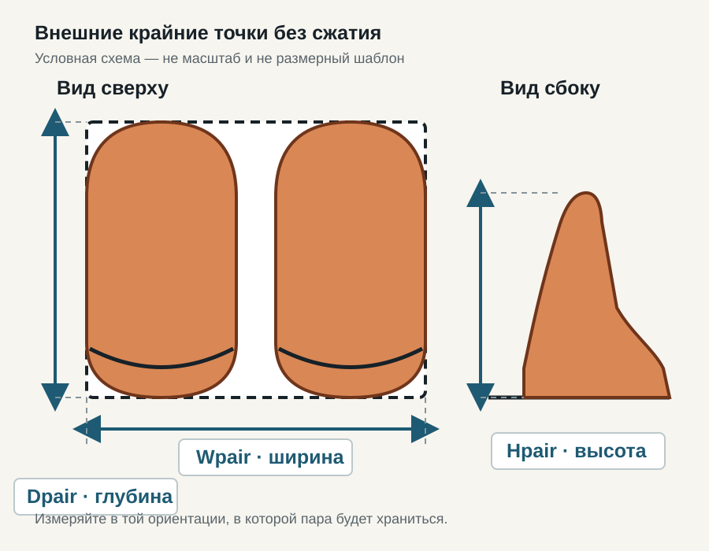

Ширина
Измеряйте свободный просвет между боковинами, петлями, направляющими и другими выступами. Наружная ширина корпуса не показывает, сколько места доступно паре.
Памятка перед расчётом
Сначала зафиксируйте внешний прямоугольник реальной пары и чистое пространство полки. Только после этого переносите наблюдаемые размеры в существующий калькулятор.
01 · Фактическая пара
Возьмите именно ту пару, которую хотите разместить. Поставьте оба предмета рядом на ровную поверхность в предполагаемой ориентации: носками вперёд, вбок или иначе — так, как планируется на полке. Не прижимайте мягкие части и не накладывайте один предмет на другой ради меньшего числа.
Мысленно или малярной лентой обозначьте прямоугольник по самым удалённым выступам. Wpair — максимальная внешняя ширина всей пары. Dpair — максимальная глубина от крайней задней до крайней передней точки. Затем сбоку измерьте Hpair — наибольшую высоту обуви в этой же ориентации.
Повторите запись для самой широкой и самой высокой из предназначенных для этой обувницы пар. Коробки измеряйте отдельно: размер коробки нельзя подменять размером обуви, а размер одной пары — считать универсальным для остальных.

02 · Чистое место полки
Измеряйте свободный просвет между боковинами, петлями, направляющими и другими выступами. Наружная ширина корпуса не показывает, сколько места доступно паре.
Считайте расстояние от доступного переднего края до задней стенки или ближайшего препятствия. Учтите траекторию двери и возможность взять обувь, но не добавляйте выдуманный фиксированный запас.
Снимайте чистый вертикальный просвет до следующей полки или механизма. Отдельно проверьте, проходит ли обувь при фактическом способе постановки и извлечения.
Одна строка замера не подтверждает удобство двух рядов, работу наклонного или вращающегося механизма, деформацию мягкой обуви либо закрывание двери. Эти условия проверяются отдельно на конкретной конструкции.
03 · Запись без вывода о вместимости
Это вымышленные числа для демонстрации записи, а не типовой размер, норма или рекомендация. Здесь намеренно не рассчитывается количество пар: для результата нужны настройки существующего калькулятора и отдельная проверка глубины, высоты и доступа.
250 мм в существующем калькуляторе — редактируемый пример ширины пары, а не стандарт. Замените его собственным Wpair для выбранной фактической пары.
04 · Лист наблюдений
Пустой лист A4 разделяет размеры каждой пары, её ориентацию и параметры полки. Поля для препятствий, двери и доступа помогают не свести проверку к одной ширине.
Лист не является масштабным шаблоном или измерительным прибором. Размер печати и физическое соответствие обуви не гарантируются.
На этой странице нет JavaScript, форм, аккаунтов, хранилища или трекинга. Обычный хостинг может получить технический запрос страницы и файлов; внешний переход происходит только после нажатия ссылки на калькулятор.